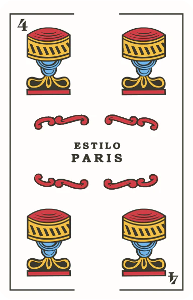
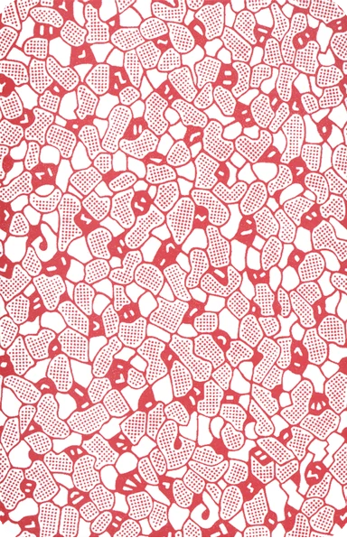
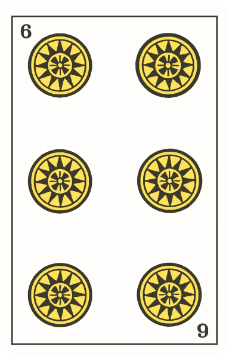
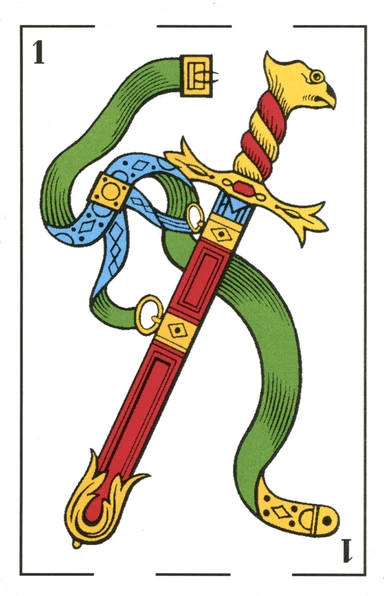

ClaraTu pareja · Dador

DiegoRival · Mano
Compu 2Rival


Muestra 6 de orosTu turnoElegí una carta o cantá
TrucoEnvidoReal envidoFaltaMazo



😉
Ana · Vos
A · Cantos a la vista
Tapete arriba, cantos legales como fila de botones sobre la mano. Un toque y cantás. Historial, tantos y Discord detrás de ☰. Mano mediana.
ClaraTu pareja · Dador
DiegoRival · Mano
Compu 2Rival
Muestra 6 de oros
Tu turnoArrastrá una carta al centro
😉
Cantar ▴
📜
Mano🔢
Tantos🎙
Voz⋯
Más
Mano🔢
Tantos🎙
Voz⋯
Más
B · Mano grande, cantar en un botón
Las cartas en abanico, grandes, se tocan o se arrastran. "Cantar" abre una hoja con los cantos. Cuando te cantan, la respuesta aparece sola. Tira inferior para historial, tantos y voz.
ClaraTu pareja · Dador
DiegoRival · Mano
Compu 2Rival
Muestra 6 de oros
Diego cantó envido
Responder
QuieroNo quiero
Subir
Real envidoFalta envido
Seña a Clara
😐 Silencio😉 Guiño🤨 Cejas⋯
🔒 Solo la ve Clara.
C · Panel de decisión
La mesa arriba y, cuando tenés que decidir, sube un panel con todo junto: respuesta, subidas y seña. Las cartas se achican mientras el panel está abierto.